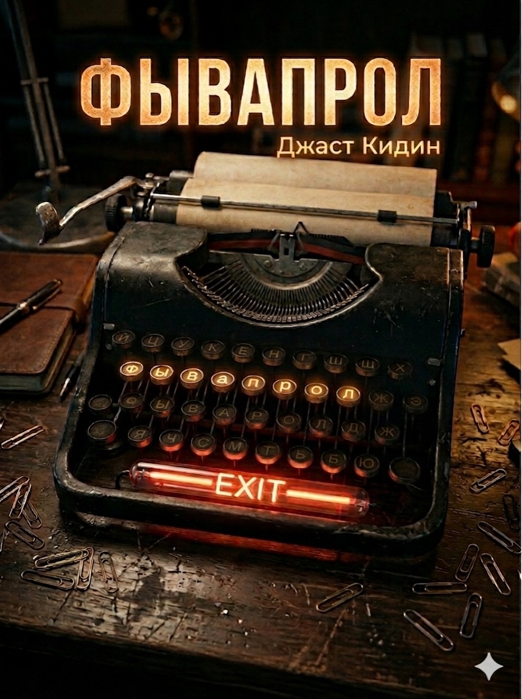

ФЫВАПРОЛ
Рыцарь Сисадминного Образа
In a Moscow where reality blurs with the digital, Fyvaprol Loginov is a seventh-generation system administrator who stumbles into a conspiracy that threatens humanity's future.
When sysadmins around the world begin mysteriously disappearing, Fyva finds himself recruited by exIT—a clandestine organization fighting against the technological singularity. Their mission: to prevent humanity from collapsing into virtual worlds and abandoning the physical universe.
Part cyberpunk thriller, part philosophical meditation on technology and consciousness, ФЫВАПРОЛ explores the choice between the comfort of illusion and the harsh beauty of reality.
Themes
The Exit Movement
A neo-Luddite organization fighting to keep humanity grounded in physical reality
Virtual Collapse
Why we don't see alien civilizations: they all retreat into simulation
Soviet Nostalgia
Retro-futuristic Moscow where past and future collide
Underground Networks
Literal and metaphorical: metro tunnels and digital connections